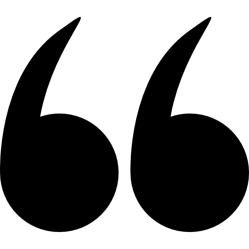
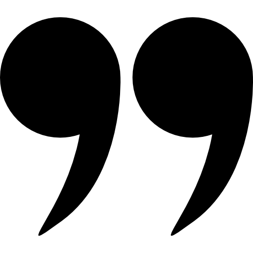
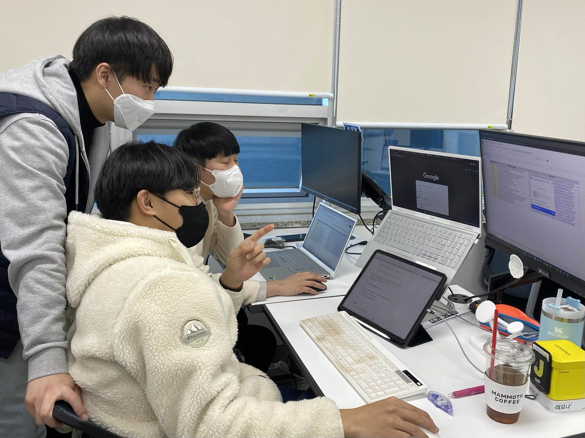
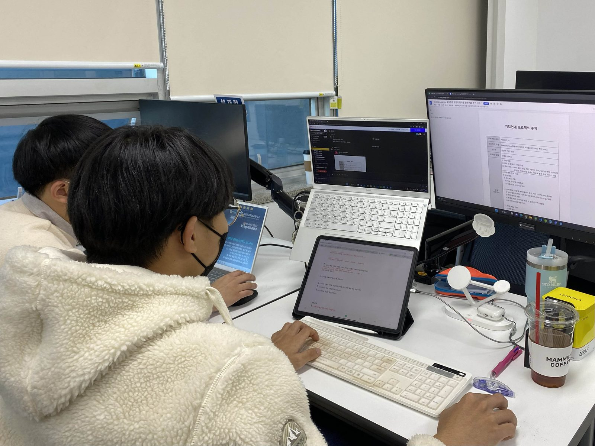
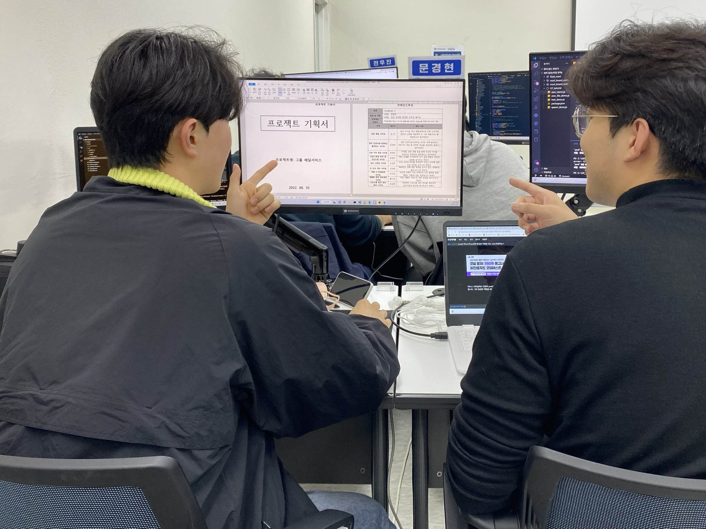
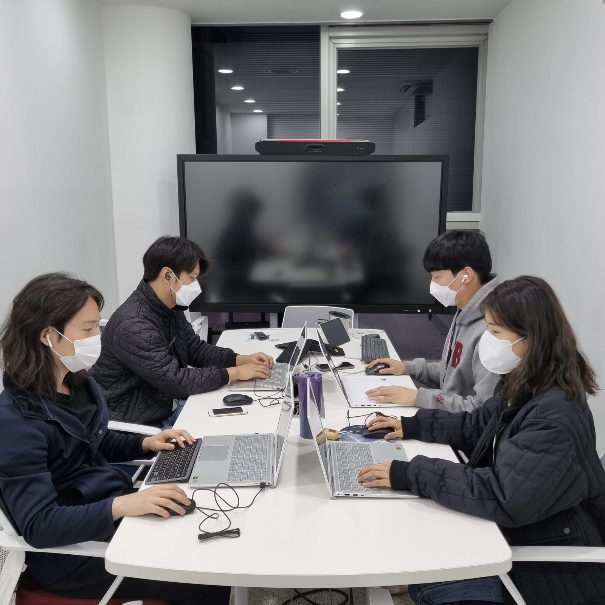
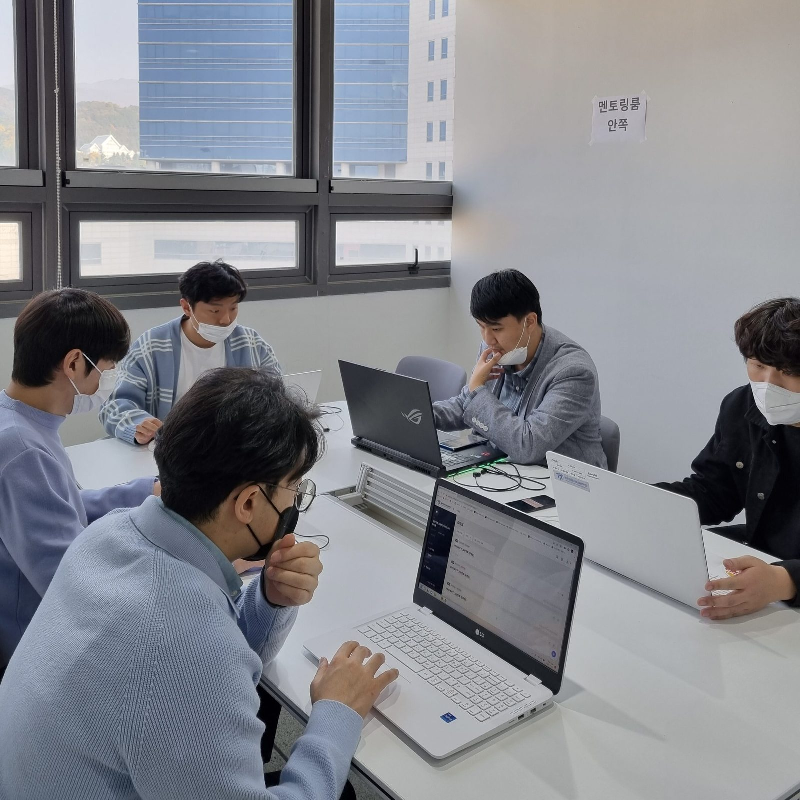
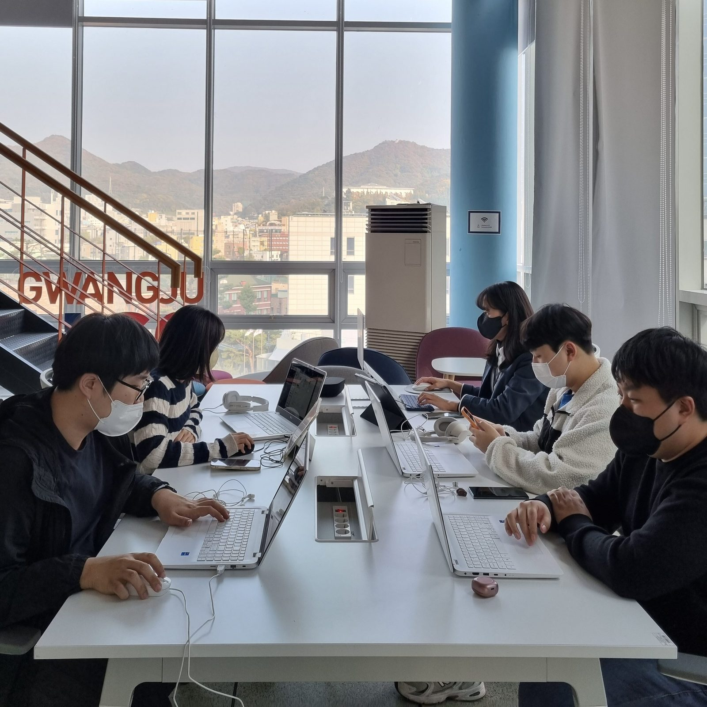

실전융합프로젝트 | 기획 멘토링
안녕하세요~ 광주인공지능사관학교입니다! 오늘은 실전융합프로젝트의 시작이라고 할 수 있는 기획에 대해 이야기해보려고 해요. 그럼 실전융합프로젝트는 무엇인지부터 간단하게 알아볼까요?
실전융합프로젝트란 🧐
실무중심 기술 고도화 + 기업프로젝트 교육 중에 배운 모든 실무중심 기술들을 총 동원하고, 협약기업이 기획단계부터 참여하여 밀착 멘토링을 동시에 진행하는 최종 실전 프로젝트
최종으로 진행되는 프로젝트인 만큼
기획부터 단계적으로 이루어졌는데요.
어떤 과정으로 진행되었는지 살펴보도록 할게요.
STEP1 | 주제 공개

가장 먼저 프로젝트 주제를 공개하였는데요. ‼️ 10월 17일, 19일, 24일 세 차례에 걸쳐 42개의 주제를 오픈하였고 추가로 27일에 15개의 주제를 오픈하였습니다.STEP2 | 주제 신청

주제가 공개된 날로부터 이틀 뒤에는 팀 별로 주제를 신청하는 시간을 가졌습니다. 주제 공개가 세 번에 걸쳐 진행되었으니 신청도 세 번 진행되었겠죠? 😗STEP3 | 기획서 작성

마찬가지로 기획서 역시 세 개를 작성해야 했는데요. 추가로 공개된 주제까지 신청한 팀은 총 4개의 기획서를 작성했답니다. 🥺 기획서 쓰느라 고생한 교육생 모두에게 박수를 보냅니다. 👏👏STEP4 | 기획 멘토링

작성한 기획서를 바탕으로 해당 기업과 멘토링을 진행했습니다. 이 단계를 통해 함께 프로젝트를 진행하게 될지도 모를 멘토와 멘티가 서로 알아가는 시간을 가졌겠죠?
STEP5 | 기업 매칭

기획 멘토링 이후 최종적으로 기업 매칭까지 마치면 이제 본격적으로 시작인데요. 🏃
작성해두었던 기획서를 보강하여
기획 발표를 진행했다고 합니다!
기획 발표 이야기는 다음 포스팅에서 풀어도록 할게요! 😀